#minecraft:bee_food
物品标签 · 128 个已收录成员
标签成员 (128)
 野花簇
野花簇minecraft:wildflowers仙人掌花
minecraft:cactus_flower黄色花朵
atmospheric:yellow_blossoms
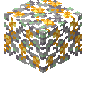
开花酸枝树叶atmospheric:flowering_morado_leaves
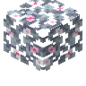
盛开的苹果树树叶bountifulfares:flowering_apple_leaves
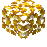
盛开的金苹果树树叶bountifulfares:flowering_golden_apple_leaves
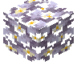
盛开的橙子树树叶bountifulfares:flowering_orange_leaves
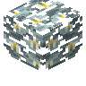
盛开的柠檬树树叶bountifulfares:flowering_lemon_leaves
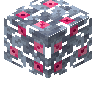
盛开的李子树树叶bountifulfares:flowering_plum_leaves
 野生亚麻
野生亚麻supplementaries:wild_flax张开的眼眸花
minecraft:open_eyeblossom闭合的眼眸花
minecraft:closed_eyeblossom暖和猴毛风车子
atmospheric:warm_monkey_brush炽热猴毛风车子
atmospheric:hot_monkey_brush滚烫猴毛风车子
atmospheric:scalding_monkey_brush丝兰花
atmospheric:yucca_flower吉莉草
atmospheric:gilia凤眼莲
atmospheric:water_hyacinth
 火棘
火棘atmospheric:firethorn连翘
atmospheric:forsythia秋番红花
autumnity:autumn_crocus金银花
bountifulfares:honeysuckle堇紫风铃花
bountifulfares:violet_bellflower杜鹃花
ecologics:azalea_flower车轮花
environmental:cartwheel蓝铃花
environmental:bluebell紫罗兰
environmental:violet石竹
environmental:dianthus红色莲花
environmental:red_lotus_flower
 白色莲花
白色莲花environmental:white_lotus_flower一点红
environmental:tasselflower黄色木槿花
environmental:yellow_hibiscus橙色木槿花
environmental:orange_hibiscus红色木槿花
environmental:red_hibiscus粉红色木槿花
environmental:pink_hibiscus品红色木槿花
environmental:magenta_hibiscus紫色木槿花
environmental:purple_hibiscus星光花
eternal_starlight:starlight_flower
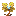
金灿花eternal_starlight:aureate_flower
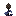
松球花eternal_starlight:conebloom扇紫花
eternal_starlight:nightfan粉玫瑰
eternal_starlight:pink_rose星光火炬花
eternal_starlight:starlight_torchflower茜草花
eternal_starlight:whisperbloom
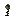
沼泽玫瑰eternal_starlight:swamp_rose
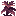
枯萎星光花eternal_starlight:withered_starlight_flower漠紫花
eternal_starlight:desert_amethysia枯萎漠紫花
eternal_starlight:withered_desert_amethysia红色晶寄花
eternal_starlight:red_crystalfleur蓝色晶寄花
eternal_starlight:blue_crystalfleur火兰
eternal_starlight:fire_orchid苔生花
eternal_starlight:red_velvetumoss_flower玫瑰
candlelight:rose野生车前草
farm_and_charm:wild_ribwort野生荨麻
farm_and_charm:wild_nettle野生小麦
farm_and_charm:wild_emmer野生玉米
farm_and_charm:wild_corn野生大麦
farm_and_charm:wild_barley
 野生燕麦
野生燕麦farm_and_charm:wild_oat野生胡萝卜
farm_and_charm:wild_carrots野生甜菜
farm_and_charm:wild_beetroots野生土豆
farm_and_charm:wild_potatoes野生番茄
farm_and_charm:wild_tomatoes野生生菜
farm_and_charm:wild_lettuce野生洋葱
farm_and_charm:wild_onions野生草莓
farm_and_charm:wild_strawberries
 黄色野花
黄色野花natures_spirit:yellow_wildflower
 紫色野花
紫色野花natures_spirit:purple_wildflower
 蓝铃花
蓝铃花natures_spirit:bluebell
 银莲花
银莲花natures_spirit:anemone
 蓝色鸢尾
蓝色鸢尾natures_spirit:blue_iris
 白花帚石楠
白花帚石楠natures_spirit:white_heather
 黑花鸢尾
黑花鸢尾natures_spirit:black_iris
 紫花帚石楠
紫花帚石楠natures_spirit:purple_heather
 矮花丛
矮花丛natures_spirit:dwarf_blossoms
 红宝石花
红宝石花natures_spirit:ruby_blossoms
 万寿菊
万寿菊natures_spirit:marigold
 朱槿
朱槿natures_spirit:hibiscus
 虎百合
虎百合natures_spirit:tiger_lily
 帝王花
帝王花natures_spirit:protea
 红花帚石楠
红花帚石楠natures_spirit:red_heather
 白色海香芥
白色海香芥upgrade_aquatic:white_searocket粉红色海香芥
upgrade_aquatic:pink_searocket蒲公英
minecraft:dandelion虞美人
minecraft:poppy兰花
minecraft:blue_orchid绒球葱
minecraft:allium蓝花美耳草
minecraft:azure_bluet红色郁金香
minecraft:red_tulip橙色郁金香
minecraft:orange_tulip
 白色郁金香
白色郁金香minecraft:white_tulip粉红色郁金香
minecraft:pink_tulip滨菊
minecraft:oxeye_daisy矢车菊
minecraft:cornflower
 铃兰
铃兰minecraft:lily_of_the_valley
 凋灵玫瑰
凋灵玫瑰minecraft:wither_rose
 火把花
火把花minecraft:torchflower高丝兰花
atmospheric:tall_yucca_flower鹤望兰
environmental:bird_of_paradise粉红色翠雀花
environmental:pink_delphinium蓝色翠雀花
environmental:blue_delphinium紫色翠雀花
environmental:purple_delphinium
 白色翠雀花
白色翠雀花environmental:white_delphinium扇紫花丛
eternal_starlight:nightfan_bush粉玫瑰丛
eternal_starlight:pink_rose_bush
 秋海棠
秋海棠natures_spirit:begonia
 栀子花
栀子花natures_spirit:gardenia
 毛地黄
毛地黄natures_spirit:foxglove
 荷包牡丹
荷包牡丹natures_spirit:bleeding_heart
 康乃馨
康乃馨natures_spirit:carnation
 银灌木
银灌木natures_spirit:silverbush
 蓝风信子
蓝风信子natures_spirit:blue_bulbs
 啮龙花
啮龙花natures_spirit:snapdragon
 薰衣草
薰衣草natures_spirit:lavender
 香蒲
香蒲natures_spirit:cattail开花灯心草
upgrade_aquatic:flowering_rush向日葵
minecraft:sunflower丁香
minecraft:lilac牡丹
minecraft:peony玫瑰丛
minecraft:rose_bush
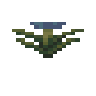
瓶子草minecraft:pitcher_plant
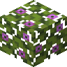
盛开的杜鹃树叶minecraft:flowering_azalea_leaves
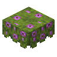
盛开的杜鹃花丛minecraft:flowering_azalea
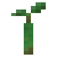
红树胎生苗minecraft:mangrove_propagule
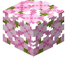
樱花树叶minecraft:cherry_leaves
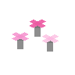
粉红色花簇minecraft:pink_petals紫颂花
minecraft:chorus_flower
 孢子花
孢子花minecraft:spore_blossom
使用该标签的配方
无